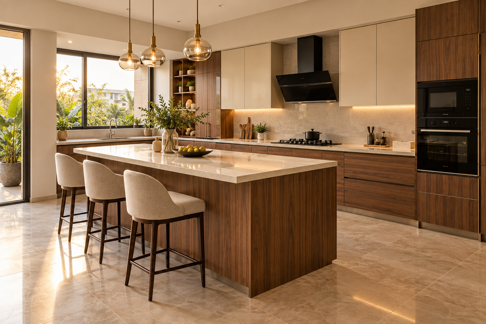
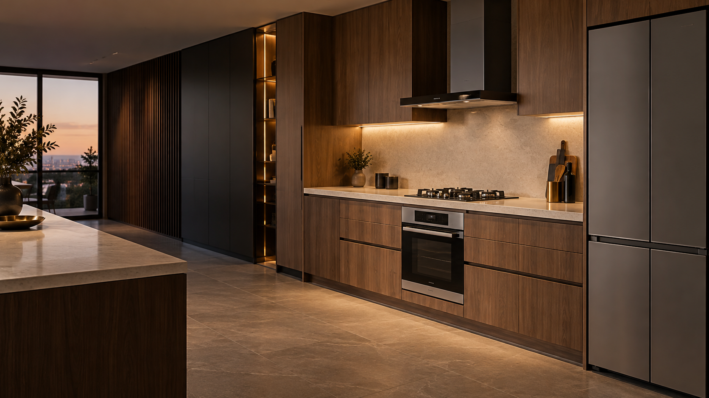

Heritage of Saharanpur · The Woodcraft & Kitchen Capital
Handcrafted by Karigars.
Engineered for Culinary Art.
For over twenty-six years, Sushil Interior has stood at the crossroads of Saharanpur’s legendary teakwood carving lineage and precision German modular kitchen engineering. We handcraft bespoke cutlery inserts, corner units, and tall pantries fitted with Blum and Hettich hardware.

Woodcraft Capital of India
Saharanpur, situated at the foothills of the Shivalik Himalayas, is globally celebrated as India's preeminent center for master wooden craftsmanship. Here, woodworking is not merely a manufacturing trade; it is a sacred inherited art form passed from father to son across generations.
At Sushil Interior, we preserve the soul of traditional Saharanpur Ustaad hand-carving while integrating modern German Blum hydraulic runners, moisture-proof BWR marine carcasses, and high-performance anti-scratch Italian finishes.
The 4-Pillar Quality Protocol
Our Woodcraft & Hardware Standard
Kiln-Dried Moisture Control
All raw Central Province (CP) Teak undergoes 45 days in thermal kiln chambers, reducing moisture to a strict 8–10%. This guarantees zero warping, swelling, or cracking across Indian monsoons and kitchen steam.
Saharanpur Teak Cutlery Trays
Our master artisans hand-finish solid teak cutlery inserts, spice compartments, and fluted cabinet handles, bringing organic timber warmth into contemporary kitchen ergonomics.
Blum & Hettich Engineering
We pair traditional hardwoods with German Blum Legrabox soft-close runners, Aventos bi-fold hydraulic overhead lifts, and anti-slip corner LeMans pull-out systems.
Saharanpur & Dehradun Setup
From our Saharanpur workshop and Dehradun design studio, each modular kitchen is dispatched in moisture-proof timber crates with white-glove on-site installation by our own master Karigars.
Visit Us in Saharanpur & Dehradun
Experience the Modular Workshop
We welcome homeowners, architects, and interior designers to visit our Saharanpur workshop or Dehradun studio. Test real corner LeMans units, open hydraulic lift-ups, review 3D CAD kitchen layouts, and inspect our seasoned timber.
